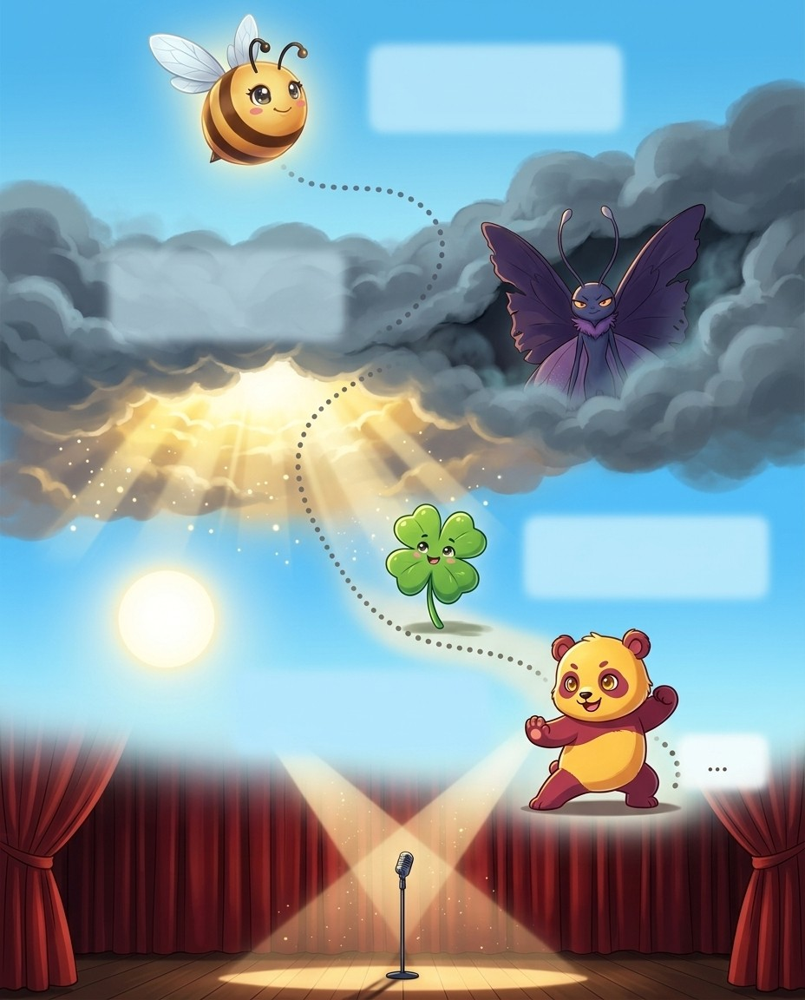

BizzyMeet the Greek root graph, spelled G, R, A, P, H. It comes from graphein, meaning to write or record. When you…
GOT IT!
CloverSwitch to gram, and you get the thing that was written. An anagram breaks into ana, meaning again, plus gram, so its…
ANAGRAM
Fan DancerThe ending graph names the instrument. A seismograph records earthquakes. Photograph breaks into photo, meaning light, plus graph, so it's written by…
PHOTOGRAPH
Panda SenseiAdd graphy and you get the art or study. Calligraphy breaks into kalli, meaning beautiful, plus graphy, so it's beautiful writing. Choreography…
CALLIGRAPHY
🔊 narrated in the appturn the page — the whole trick, explained →
Greek graphein = to write. One root unlocks three suffix families: -graph (the instrument/method), -gram (the written thing), and -graphy (the art or study of writing something).
The pro move
CHOREOGRAPHY
Say it. kaw-ree-AH-gruh-fee
Spell it. C · H · O · R · E · O · G · R · A · P · H · Y
Say it again. kaw-ree-AH-gruh-fee
Syllables. kao · riy · aa · grah · fiy
Sounds → Letters. [kor=CHO] [ee=RE] [OG=OG] [ruh=RA] [fee=PHY]
Exception. -ph- = /f/ (Greek!); -y = /ee/ at end; -chore- from choreia = dance; 5 syllables: kor-ee-OG-ruh-fee
Origin. French
Root. Greek choros = dance + graphein = to write
The Root
Greek graphein = to write. When you see -graph or -gram, ask: what is being written or recorded? Telegraph = write from far. Monograph = written about one thing. Autograph = written by oneself. One root family, unlimited words.
-graph = The Instrument/Method
Seismograph = records earthquakes. Cardiograph = records heart. Photograph = photo (light) + graph = written by light. Lithograph = lithos (stone) = printed from stone. Stenograph = stenos (narrow) = narrow fast writing.
-gram = The Thing Written
Telegram = the distant message. Anagram = ana (again) = letters rearranged. Epigram = epi (upon) = a witty inscription. Monogram = mono (one) = initials written. Cryptogram = crypto (hidden) = a coded message.
-graphy = The Art/Study
Calligraphy = kalli (beautiful) = beautiful writing. Choreography = choreia (dance) = the art of composing dances. Topography = topos (place) = describing physical features. Stenography = shorthand writing.
Vex alert
AUTO + BIO + GRAPHY: a self (auto) life (bio) writing (graphy) — PH makes the F sound, not plain F.
Sound trap
topography sounds like typography — at the mic, always ask for the meaning.
Check yourself
Cover the page and spell seismograph · cardiograph · lithograph out loud. Miss one? Read the idea again — it's faster than guessing twice.
Greek phonē = sound, voice. The ph spelling is an absolute Greek signal — never f in learned sound words. This root appears in music, linguistics, and technology.
The pro move
CACOPHONY
Say it. k-a-k-AH-f-uh-n-ee
Spell it. C · A · C · O · P · H · O · N · Y
Say it again. k-a-k-AH-f-uh-n-ee
Syllables. c · a · c · o · p · h · o · n · y
Sounds → Letters. [kuh=CA] [KOF=COPH] [uh=O] [nee=NY]
Exception. -ph- = /f/ not /p/ (Greek signal!); -cac- from kakos = bad; -y = /ee/; stress: kuh-KOF-uh-nee
Origin. French
Root. Greek kakos = bad + phone = sound/voice
The Root
Greek phonē = sound, voice. The ph = /f/ spelling is the Greek identity card. Never write f for sound words that come from Greek. Phonics = the study of sound-letter relationships. Phonetics = science of speech sounds. Phoneme = the smallest u…
Good vs Bad Sound
Greek eu = good; kako = bad. Euphony = pleasant harmonious sound. Cacophony = harsh, unpleasant noise. Symphony = syn (together) + phony = sounds in harmony. Polyphony = poly (many) = many simultaneous voices. Homophone = homo (same) = same so…
Sound Instruments
Microphone = mikros (small) + phone = makes small voices big. Saxophone = invented by Adolphe Sax + phone = his instrument's sound. Megaphone = megas (large) = makes voice large. Xylophone = xylo (wood) + phone = wooden sound. All these instru…
Language of Sound
Phonics = sound-letter study. Phonetics = speech sound science. Homophone = same sound. Dysphonia (dys- = bad + phonia) = difficulty with voice production. Aphasia (a- = without + phasis = speech) = loss of ability to speak or understand langu…
Vex alert
A symPHONy is sounds (PHON) together — not symphAny, the O holds the note!
Check yourself
Cover the page and spell cacophony · euphony · symphony out loud. Miss one? Read the idea again — it's faster than guessing twice.
Greek pathos = feeling, suffering. In medicine it means disease; in literature and rhetoric it means emotion. Two meanings, one root — context tells you which applies.
The pro move
ANTIPATHY
Say it. a-NTIH-puh-thee
Spell it. A · N · T · I · P · A · T · H · Y
Say it again. a-NTIH-puh-thee
Syllables. ae · ntih · pah · thiy
Sounds → Letters. [an=AN] [TIP=TI] [uh=PA] [thee=THY]
Exception. -th- = /th/ from Greek theta; -y at end = /ee/; -pathy not -pathee; stress: an-TIP-uh-thee
Origin. Greek
Root. Greek 'antipatheia' = opposite feeling, from 'anti-' = against + 'path
The Root
Pathos = feeling, suffering. Sympathy = sym (with) = feeling with someone. Empathy = em (in) = feeling as if inside someone's experience. Antipathy = anti (against) = feeling against = deep dislike. Apathy = a- (without) = feeling nothing at a…
The pathos Scale
Apathy (no feeling) → sympathy (feeling alongside) → empathy (feeling as if it's yours). These three form a scale of emotional connection. In a bee: apathy = A-P-A-T-H-Y; sympathy = S-Y-M-P-A-T-H-Y; empathy = E-M-P-A-T-H-Y. Same ending, differ…
Pathology = path + logy = the study of disease. Pathogen = path + gen = a disease-causing organism. Pathological = relating to disease; also means compulsive (a pathological liar). Pathologist = a doctor who analyzes disease causes. The pathos…
Vex alert
PATHology is the LOGY (study) of the PATH disease takes — one G, not two.
Check yourself
Cover the page and spell sympathy · empathy · antipathy out loud. Miss one? Read the idea again — it's faster than guessing twice.
BizzyMeet the Greek root chron, spelled C, H, R, O, N. It comes from khronos, meaning time, and even the god of…
UH-OH!
Clover · Vex is circlingHere's the trap. In these Greek words the c-h sounds like a k, not like the c-h in chair. So you hear…
CHRONIC
GOT IT!
Oni GrinSo that c-h sounding like k is a reliable Greek signal. Chronology, chaos, chorus, character. Hear a k in a learned word,…
PebbleTake anachronism. It breaks into ana, meaning against, plus chron, time, so it's something out of its proper time, like a smartphone…
ANACHRONISM
🔊 narrated in the appturn the page — the whole trick, explained →
Bizzing Bee · Root Camp: Greek22
Chapter 4 · chron (time)The idea · ★★☆
The big idea
Greek khronos = time. All chron- words relate to time. The ch = /k/ sound is a Greek signal. The god Kronos (Time) gave his name to this root — and to the planet Saturn in Roman mythology.
The pro move
ANACHRONISM
Say it. uh-NA-kruh-nih-zuhm
Spell it. A · N · A · C · H · R · O · N · I · S · M
Say it again. uh-NA-kruh-nih-zuhm
Syllables. ah · nae · krah · nih · zah · m
Sounds → Letters. [uh=A] [NAK=NACH] [ruh=RO] [niz=NIS] [um=M]
Exception. -ch- = /k/ in Greek words (signal!); -ism not -izm; stress: uh-NAK-ruh-niz-um
Origin. Latin
Root. Greek ana = against + chronos = time
The Root
Greek Khronos = time (and the god of time). Chron- always appears with the ch = /k/ Greek spelling. Chronological = in time order. Anachronism = ana (against) + chron = something out of its proper time (a smartphone in a medieval movie). Synch…
Time Order Words
Chronological = arranged by time. Diachronic (dia = through) = studied across time (how language changes). Synchronic (syn = together) = studied at one moment in time. Isochronal (iso = equal) = happening at equal time intervals. Greek prefixe…
Measuring Time
Chronometer = chron + meter = instrument that measures time precisely. Used by sailors for navigation — required the most accurate timekeeping available. Chronograph = chron + graph = records/writes time (a stopwatch-type instrument). Chronosc…
Time Stories
Chronicle = a time-ordered record of events. Chronic = chron + -ic = lasting over a long time (chronic illness = ongoing). Anachronistic = out of its proper time period. Synchronicity = meaningful coincidence of events happening at the same ti…
Vex alert
An ANACHRONISM fights against (ANA) CHRONOS (time) — keep 'chron' for time and end it with '-ism', not '-izm'.
Check yourself
Cover the page and spell anachronism · synchronize · chronometer out loud. Miss one? Read the idea again — it's faster than guessing twice.
Bizzing Bee · Root Camp: Greek23
Chapter 4 · chron (time)Practice · ★★☆
Say it. Spell it out loud. Write it.
🔊 every word has real audio in the app
anachronism
/ uh-NA-kruh-nih-zuhm / · /əˈnækrənɪzəm/
something located at a time when it could not have existed or occurred
hook: An ANACHRONISM fights against (ANA) CHRONOS (time) — keep 'chron' for time and end it with …
The knight carrying a smartphone in the historical film was an obvious ▁▁▁ that made viewers laugh.
synchronize
/ SIH-ngkruh-neyez / · /ˈsɪŋkrənaɪz/
make synchronous and adjust in time or manner
hook: SYNCHRONize your watches — the CHRON inside reminds you of CHRONology, so don't drop the H.
Let's ▁▁▁ our efforts
chronometer
/ kruh-NOM-ih-ter / · /krəˈnɑmɪtər/
an accurate clock (especially used in navigation)
hook: CHRONO (time) + METER (measure) = time measurer.
The ship's navigator relied on the ▁▁▁ to calculate their exact position in the middle of the Pacific…
chronograph
/ KROH-noh-graf / · /ˈkroʊnoʊɡræf/
an accurate timer for recording time
hook: A chronograph GRAPHS time — CHRONOgraph writes (graphs) time for you.
The Olympic coach used a ▁▁▁ to record each swimmer's exact finishing time down to the hundredth of a…
chronicle
/ KRAH-nih-kuhl / · /ˈkrɑnɪkəl/
a record or narrative description of past events
hook: A CHRONICLE tracks time in little bites — 'chron' for time, '-icle' like a tiny article.
The elderly historian decided to write a detailed ▁▁▁ of the town's founding, recording every important…
chronic
/ KRAH-nihk / · /ˈkrɑnɪk/
being long-lasting and recurrent or characterized by long suffering
hook: CHRONIC pain lasts through time — 'chron' = time, just like in chronology.
After years of playing competitive soccer without proper rest, the athlete developed ▁▁▁ knee pain that f…
the Vibe
Bizzing Bee · Root Camp: Greek24
Chapter 4 · chron (time)Rapid round · ★★☆
More ammo — one line each.
diachronic
isochronal
chronological/krah-nuh-LAH-jih-kuhl/ relating to or arranged according to temporal order
Pick 4 words from above. Say each one as you write it — three times, no shortcuts. The third copy is the one your hand remembers.
the Vibe
Bizzing Bee · Root Camp: Greek25
Chapter 4 · chron (time)Checkpoint · ★★☆
Star Steel · Champion of the Dojo runs the checkpoint
Do you own the idea?
Same questions the app asks at this stop on the Word Map. Circle, then check the back. Star Steel's power is Second Wind — borrow it.
1. Which of these is the big idea of “chron (time)”?
ALatin com- = with, together.
BGreek khronos = time.
COld English/Latin un- = not (before adjectives) or reverse the action of (before verbs).
DThe most common suffix in English — from Latin -tionem.
2. Which word belongs to this chapter's family?
Achocolate
Banachronism
Cimpeccable
Ddiaphanous
3. The card “The Root” says…
AGreek Khronos = time (and the god of time). Chron- always appears with the ch = /k/ Greek spell…
BChronological = arranged by time. Diachronic (dia = through) = studied across time (how languag…
CChronometer = chron + meter = instrument that measures time precisely. Used by sailors for navi…
DChronicle = a time-ordered record of events. Chronic = chron + -ic = lasting over a long time (…
4. “An ▁▁▁ fights against (ANA) CHRONOS (time) — keep 'chron' for time and end it with '-ism', not '-izm'.” — which word is this hook about?
Aanachronism
Bsynchronize
Cchronograph
Dchronometer
Dictation round
Hand this page to anyone nearby. They read the words from the answer key (Ch. 4 dictation, at the back) — you write, no peeking.
1.
2.
Bizzing Bee · Root Camp: Greek26
Chapter 4 · chron (time)Game · ★★☆
Panda Sensei's puzzle page
Crossword
I own this
1
2
3
4
5
6
7
8
9
Across
3. being long-lasting and recurrent or characterized by long suffering
5.
7.
8. something located at a time when it could not have existed or occurred
Down
1.
2. an accurate timer for recording time
4. an accurate clock (especially used in navigation)
6. make synchronous and adjust in time or manner
9. a record or narrative description of past events
Bee Break · Fan Dancer's true fact
The folding fan was invented in Japan — legend says inspired by the folding wings of a bat.
Bizzing Bee · Root Camp: Greek27
Chapter 5 · morph (form / shape)Story · ★★☆
5
Greek Root Families
morph (form / shape)
📍 the Big Stage

BizzyMeet the Greek root morph, spelled M, O, R, P, H. It comes from morphē, meaning form or shape. It pops up…
UH-OH!
Clover · Vex is circlingOne spelling note. The p-h in morph sounds like an f, but it's still p-h, Greek phi. Morphine, the drug, even comes…
MORPHINE
GOT IT!
Panda SenseiTake metamorphosis. It breaks into meta, meaning change, plus morph, form, plus osis, a process. So it's a complete change of form,…
METAMORPHOSIS
KoiNow flip it. Amorphous breaks into a, meaning without, plus morph, form, so it means shapeless. Polymorphous uses poly, many, so it…
AMORPHOUS
🔊 narrated in the appturn the page — the whole trick, explained →
Bizzing Bee · Root Camp: Greek28
Chapter 5 · morph (form / shape)The idea · ★★☆
The big idea
Greek morphē = form, shape. Morph- appears in biology, linguistics, mythology, and technology. The shape-shifting nature of the root makes it appear in transformation vocabulary across every field.
The pro move
METAMORPHOSIS
Say it. meh-tuh-MAW-rfuh-suhs
Spell it. M · E · T · A · M · O · R · P · H · O · S · I · S
Say it again. meh-tuh-MAW-rfuh-suhs
Syllables. meh · tah · mao · rfah · sah · s
Sounds → Letters. [meh=ME] [tuh=TA] [MOR=MOR] [fuh=PHO] [sis=SIS]
Exception. meta- = beyond/change; -morph- = form; -ph- = /f/; -osis = process; 5 syllables
Origin. Greek
Root. Greek meta = change + morphe = form + sis = process
The Root
Greek morphē = form, shape. Metamorphosis = meta (change) + morph (form) + -osis (process) = a complete change of form. Amorphous (a- + morph) = without shape = shapeless. Polymorphous (poly- + morph) = having many forms. Morphology = the stud…
Biological Morph Words
Metamorphosis = caterpillar → butterfly = complete form change. Dimorphic (di- = two) = existing in two distinct forms. Anthropomorphic = anthropo + morphic = having human form. Geomorphic = geo + morphic = having earth-shaped features. Isomor…
Linguistic Morph Words
Morpheme = the smallest meaningful unit in language (-tion, un-, run). Morphology = the study of word forms and structure. Allomorph (allo- = different) = a different form of the same morpheme (the plural -s in cats vs -es in boxes). These are…
Technology & Culture
Morph (verb) = to transform (as in computer graphics). Anamorphic = ana (back) + morph = distorted image that becomes clear from a specific angle. Anthropomorphism = attributing human characteristics to non-humans (giving animals human emotion…
Vex alert
metaMORPHosis: the caterpillar MORPHs through a process (-osis), not an 'a'.
Check yourself
Cover the page and spell metamorphosis · amorphous · polymorphous out loud. Miss one? Read the idea again — it's faster than guessing twice.
Bizzing Bee · Root Camp: Greek29
Chapter 5 · morph (form / shape)Practice · ★★☆
Say it. Spell it out loud. Write it.
🔊 every word has real audio in the app
metamorphosis
/ meh-tuh-MAW-rfuh-suhs / · /mɛtəˈmɔrfəsəs/
the marked and rapid transformation of a larva into an adult that occurs in some animals
hook: metaMORPHosis: the caterpillar MORPHs through a process (-osis), not an 'a'.
the ▁▁▁ of the old house into something new and exciting
amorphous
/ uh-MAW-rfuhs / · /əˈmɔrfəs/
having no definite form or distinct shape
hook: Amorphous has 'morph' inside — morph means shape, and amorphous has NO shape.
▁▁▁ clouds of insects
polymorphous
/ pol-ee-MOR-fus / · /pɑliˈmɔrfʌs/
relating to the crystallization of a compound in two or more different forms
hook: POLY + MORPH + OUS: many morphs (shapes) — think of a shapeshifter with many forms.
▁▁▁ crystallization
morphology
/ maw-RFAH-luh-jee / · /mɔˈrfɑlədʒi/
the branch of biology that deals with the structure of animals and plants
hook: MORPHOLOGY: the study of form — keep the PH because Greek PHilosophers loved studying PHorm…
In science class, we studied the ▁▁▁ of insects, comparing the body structures of beetles and butterfl…
dimorphic
/ deye-MAW-rfihk / · /daɪˈmɔrfɪk/
occurring or existing in two different forms
hook: DiMORPHic means two (DI) shapes (MORPH) — like a Transformer with two forms.
The biology textbook explained that many bird species are ▁▁▁, with males displaying vivid, colorful fe…
anthropomorphic
/ a-nthruh-puh-MAW-rfihk / · /ænθrəpəˈmɔrfɪk/
suggesting human characteristics for animals or inanimate things
hook: MORPHIC means shaped — anthropoMORPHIC means shaped like a human; think of a MORPHing robot…
The animated film featured ▁▁▁ animals who spoke, wore clothes, and faced very human problems.
the Big Stage
Bizzing Bee · Root Camp: Greek30
Chapter 5 · morph (form / shape)Rapid round · ★★☆
More ammo — one line each.
geomorphic
isomorphic/eye-soh-MOR-fik/ having similar appearance but genetically different
morpheme/MOR-feem/ minimal meaningful language unit; it cannot be divided into sma…
allomorph/A-luh-mawrf/ any of several different crystalline forms of the same chemical…
anthropomorphism/a-nthruh-puh-MAW-rfih-zuhm/ the representation of objects (especially a god) as having huma…
anamorphic
morphine/m-AW-r-f-ee-n/ is a narcotic used as a pain-killer or sedative
Lock them in
Pick 4 words from above. Say each one as you write it — three times, no shortcuts. The third copy is the one your hand remembers.
the Big Stage
Bizzing Bee · Root Camp: Greek31
Chapter 5 · morph (form / shape)Checkpoint · ★★☆
Elemental Prime · Grandmaster of the Elements runs the checkpoint
Do you own the idea?
Same questions the app asks at this stop on the Word Map. Circle, then check the back. Elemental Prime's power is Quick Draw — borrow it.
1. Which of these is the big idea of “morph (form / shape)”?
AGreek morphē = form, shape.
BOld English/Latin un- = not (before adjectives) or reverse the action of (before verbs).
CLatin com- = with, together.
DThe most common suffix in English — from Latin -tionem.
BizzyMeet the Greek root scope, spelled S, C, O, P, E. It comes from skopein, meaning to look at. Every scope word…
UH-OH!
Clover · Vex is circlingOne word breaks the pattern. Horoscope uses hora, meaning hour, so it looks at the hour of your birth. The root isn't…
HOROSCOPE
GOT IT!
Star SteelThe big one is kaleidoscope, K, A, L, E, I, D, O, S, C, O, P, E. It's three roots: kalos, beautiful,…
KALEIDOSCOPE
Fan DancerThe front of the word tells you what it examines. Microscope breaks into mikros, meaning small, plus scope, so it looks at…
MICROSCOPE
🔊 narrated in the appturn the page — the whole trick, explained →
Bizzing Bee · Root Camp: Greek34
Chapter 6 · scop / scope (see / examine)The idea · ★★☆
The big idea
Greek skopein = to look at. Every -scope word is an instrument for examining something. The root tells you what is being examined; -scope tells you it is a viewing/examining device.
The pro move
KALEIDOSCOPE
Say it. k-uh-l-AY-d-uh-s-k-oh-p
Spell it. K · A · L · E · I · D · O · S · C · O · P · E
Say it again. k-uh-l-AY-d-uh-s-k-oh-p
Syllables. k · a · l · e · i · d · o · s · c · o · p · e
Sounds → Letters. [kuh=KA] [LY=LEI] [duh=DO] [skohp=SCOPE]
Exception. -kali- = kalos (beautiful) + eidos (form) + -scope; -ei- = /eye/; stress: kuh-LY-duh-skohp
Origin. Greek
Root. Greek kalos(beautiful)+eidos(shape)+skopein(to look at)
The Root
Greek skopein = to look at. Kaleidoscope = kalos (beautiful) + eidos (form) + -scope = looks at beautiful forms. Microscope = mikros (small) = looks at tiny things. Telescope = tele (far) = looks at distant things. Periscope = peri (around) = …
Medical Scopes
Stethoscope (stethos = chest) = listens to the chest. Endoscope (endo- = within) = looks inside the body. Laparoscope (laparo- = abdomen) = looks inside the abdomen. Ophthalmoscope (ophthalmos = eye) = examines the interior of the eye. Broncho…
Science Scopes
Oscilloscope (oscillare = to swing) = displays wave patterns. Spectroscope (spectrum = image) = analyzes light spectra. Cystoscope (kystis = bladder) = examines the bladder. Colonoscope = examines the colon. Each scope is named for exactly wha…
Horoscope — The Exception
Horoscope (hora = hour/season + -scope) = looking at the hour of birth to tell the future. The hora here is not a body part or scientific field — it is time. Horoscope is the only common -scope word where the root is not something being physic…
Vex alert
KALeidoscope shows BEAUTIFUL (kalos) SHAPES (eidos) to SEE (scope).
Check yourself
Cover the page and spell kaleidoscope · microscope · telescope out loud. Miss one? Read the idea again — it's faster than guessing twice.
BizzyMeet the Greek root log, spelled L, O, G. It comes from logos, meaning word, reason, or study. It's one of the…
UH-OH!
Clover · Vex is circlingHere's a trap. Demagogue and pedagogue end in agogue, meaning to lead, not logue, meaning speech. A pedagogue leads children, so a…
DEMAGOGUE
GOT IT!
Elemental PrimeLast, spelling can vary. American English likes catalog and dialog, while British English writes catalogue and dialogue. Scripps uses Merriam-Webster, so lean…
Little BoatAs logue, it means speech or words. Dialogue breaks into dia, meaning between, plus logue, so it's words between two people. Monologue…
DIALOGUE
🔊 narrated in the appturn the page — the whole trick, explained →
Greek logos = word, reason, study. One of the most productive roots in all of English — it appears as the -logy study suffix, the -log/-logue conversation words, and even in theological vocabulary.
The pro move
MONOLOGUE
Say it. MAH-nuh-lawg
Spell it. M · O · N · O · L · O · G · U · E
Say it again. MAH-nuh-lawg
Syllables. maa · nah · lao · g
Sounds → Letters. [MON=MON] [uh=O] [log=LOGUE]
Exception. -logue = /log/ sound; French form of Greek -logos; -ogue not -og at end; stress: MON-uh-log
Origin. Greek
Root. Greek monos=single + logos=word/speech
The Root
Greek logos = word, reason, study. Dialogue (dia = between) = words between two people. Monologue (mono = one) = one person's long speech. Prologue (pro = before) = words before the main work. Epilogue (epi = upon/after) = words after the main…
-logy = Study Of
This suffix is explored fully in C37 (-ology/-ologist). Key connections here: tautology (tauto = same) = saying the same thing twice. Eulogy (eu = good) = good words spoken of someone (usually at a funeral). Neologism (neo = new + logos) = a n…
Demagogue & Pedagogue
Demagogue (demos = people + ago = lead) = one who leads the people through manipulation. Pedagogue (pais = child + ago) = one who leads children = a teacher. Note: these end in -agogue = one who leads, not -logue = speech. Related by the -og- …
Theology & Related Words
Theos = god + logos = theology = the study of God. Theocracy = theos + kratos = rule by God/religious law. Monotheism, polytheism, atheism all use theos. The logos root independently means "the Word" in biblical contexts — the opening of the G…
Vex alert
A TRILOGY tells THREE stories—tri+LOGY like biology and geology, ends in Y not IE.
Check yourself
Cover the page and spell monologue · dialogue · prologue out loud. Miss one? Read the idea again — it's faster than guessing twice.
2. a political leader who seeks support by appealing to popular passions and p…
3. a newly invented word or phrase
4. speech you make to yourself
6. is a speech in praise of a dead person
7. deductive reasoning in which a conclusion is derived from two premises
8. an inference that if things agree in some respects they probably agree in o…
Down
1. (logic) a statement that is necessarily true
2. is conversation with two or more people
5. a short speech (often in verse) addressed directly to the audience by an ac…
🎈
Bee Break · idiom to drop at dinner
to borrow a cat's paws
to be so busy you'd take help from anyone
Bizzing Bee · Root Camp: Greek45
Chapter 8 · phil / phile (love)Story · ★★☆
8
Greek Root Families
phil / phile (love)
📍 the Meadow
BizzyMeet the Greek root phil, spelled P, H, I, L. It comes from philein, meaning to love. It sits at the start…
UH-OH!
Clover · Vex is circlingSpelling rule: it's always p-h, never f. Philanthropy actually has two p-h units, in phil and in anthropos, P, H, I, L,…
PHILANTHROPY
GOT IT!
PebbleAt the end, phile means one who loves. Bibliophile breaks into biblio, meaning book, plus phile, so it's a book lover. Anglophile…
BIBLIOPHILE
Paper PlaneAt the start, take philanthropy. It breaks into phil, meaning love, plus anthropos, meaning human, so it's love of humanity. Philosophy is…
PHILANTHROPY
🔊 narrated in the appturn the page — the whole trick, explained →
Bizzing Bee · Root Camp: Greek46
Chapter 8 · phil / phile (love)The idea · ★★☆
The big idea
Greek philein = to love. Phil- appears at the start of words; -phile appears at the end. Together they create the vocabulary of love and affinity — for ideas, books, countries, and knowledge itself.
The pro move
PHILANTHROPY
Say it. fih-LA-nthruh-pee
Spell it. P · H · I · L · A · N · T · H · R · O · P · Y
Say it again. fih-LA-nthruh-pee
Syllables. fih · lae · nthrah · piy
Sounds → Letters. [fih=PHI] [LAN=LAN] [thruh=THRO] [pee=PY]
Exception. -phil- = love; -anthrop- = human; -ph- = /f/ (Greek!); -y = /ee/ at end; stress: fih-LAN-thruh-pee
Origin. Latin
Root. Greek philanthropia = love of mankind (philos=loving + anthropos=human
The Root
Greek philein = to love → phil- (at start) or -phile (at end). Philanthropy (phil + anthropos = human) = love of humanity. Philosophy (phil + sophia = wisdom) = love of wisdom. Philharmonic (phil + harmonikos) = loving harmony. Bibliophile (bi…
Hemophilia (hemo- = blood + -philia) = love of blood = condition where blood does not clot. Bibliophilia = passionate love of books. Anglophilia = love of things English. The -philia form denotes the condition or tendency rather than the perso…
Philadelphia — the City of Brotherly Love
Philadelphia (philos = loving + adelphos = brother) = city of brotherly love. The name is pure Greek etymology alive in American geography. Similarly: Philip (philippos) = philos + hippos = lover of horses. Philosophy = philos + sophia = lover…
Vex alert
PHIL loves ANTHROP-ology, so he gives generously — PHILanthropY = love of humanity.
Check yourself
Cover the page and spell philanthropy · philosophy · philharmonic out loud. Miss one? Read the idea again — it's faster than guessing twice.
Bizzing Bee · Root Camp: Greek47
Chapter 8 · phil / phile (love)Practice · ★★☆
Say it. Spell it out loud. Write it.
🔊 every word has real audio in the app
philanthropy
/ fih-LA-nthruh-pee / · /fɪˈlænθrəpi/
voluntary promotion of human welfare
hook: PHIL loves ANTHROP-ology, so he gives generously — PHILanthropY = love of humanity.
The billionaire devoted her retirement to ▁▁▁, donating millions to build schools in underserved com…
philosophy
/ fuh-LAH-suh-fee / · /fəˈlɑsəfi/
a belief (or system of beliefs) accepted as authoritative by some group or school
hook: PHIL-O-SOPH-Y: Phil loves Sophie — no letters skipped between them.
self-indulgence was his only ▁▁▁
philharmonic
/ fih-lhah-RMAH-nihk / · /fɪlhɑˈrmɑnɪk/
a large orchestra; can perform symphonies
hook: PHILharmonic: a PHIL-anthropist LOVES people; philharmonic LOVES harmony
The seventh-grade music class attended a concert performed by the city's ▁▁▁ and were stunned by the…
bibliophile
anglophile
/ A-ngluh-feyel / · /ˈæŋləfaɪl/
an admirer of England and things English
hook: ANGLO + PHILE — a phile (lover) of all things ANGLO (English)
As an ▁▁▁, she decorated her room with images of Big Ben, drank tea every afternoon, and spoke with a …
francophile
/ FRA-ngkuh-feyel / · /ˈfræŋkəfaɪl/
an admirer of France and everything French
hook: A FRANCOPHILE loves FRANCE — FRANCO + PHILE (lover), no K anywhere: F-R-A-N-C-O-P-H-I-L-E.
A true ▁▁▁, Mr. Dupont decorated his classroom with Eiffel Tower posters and played French jazz every…
the Meadow
Bizzing Bee · Root Camp: Greek48
Chapter 8 · phil / phile (love)Rapid round · ★★☆
More ammo — one line each.
oenophile/EE-nuh-feyel/ someone who appreciates wine
cinephile/SIN-uh-fyl/ A person who is extremely enthusiastic about and knowledgeable …
xenophile
hemophilia/hee-muh-FEE-lee-uh/ congenital tendency to uncontrolled bleeding; usually affects m…
philadelphia/fih-luh-DEH-lfee-uh/ the largest city in Pennsylvania; located in the southeastern p…
bibliophilia/bib-lee-oh-FIL-ee-uh/ A deep love of books and reading; the passionate enthusiasm for…
philology/fih-LOL-oh-jee/ the humanistic study of language and literature
philosophic/fih-luh-SAH-fihk/ of or relating to philosophy or philosophers
philanthropist/fuh-LA-nthruh-puhst/ someone who makes charitable donations intended to increase hum…
Lock them in
Pick 4 words from above. Say each one as you write it — three times, no shortcuts. The third copy is the one your hand remembers.
the Meadow
Bizzing Bee · Root Camp: Greek49
Chapter 8 · phil / phile (love)Checkpoint · ★★☆
Fan Dancer · Speller of the Fold runs the checkpoint
Do you own the idea?
Same questions the app asks at this stop on the Word Map. Circle, then check the back. Fan Dancer's power is Fast Forward — borrow it.
1. Which of these is the big idea of “phil / phile (love)”?
AOld English/Latin un- = not (before adjectives) or reverse the action of (before verbs).
BLatin com- = with, together.
CGreek philein = to love.
DThe most common suffix in English — from Latin -tionem.
2. Which word belongs to this chapter's family?
Achocolate
Bimpeccable
Cphilanthropy
Ddiaphanous
3. The card “The Root” says…
APhiladelphia (philos = loving + adelphos = brother) = city of brotherly love. The name is pure …
BGreek philein = to love → phil- (at start) or -phile (at end). Philanthropy (phil + anthropos =…
CHemophilia (hemo- = blood + -philia) = love of blood = condition where blood does not clot. Bib…
BizzyMeet the root gen, spelled G E N. It comes from Greek, and it means birth, or origin.
GOT IT!
CloverIt loves to hide inside longer words. Take oxygen — oxy means acid, and gen means producing. Oxygen, the gas the scientists…
OXYGEN
KoiOr genre — built on the same root, meaning a kind, or type, of art or music.
GENRE
Oni GrinOr genealogy — gen, birth, plus logy, the study of — the study of where a family began.
GENEALOGY
🔊 narrated in the appturn the page — the whole trick, explained →
Bizzing Bee · Root Camp: Greek52
Chapter 9 · gen / genesis (birth / origin / produce)The idea · ★★☆
The big idea
Greek genos = birth, race, kind → Latin borrowed it as genus. This root appears in biology, chemistry, medicine, and genealogy — any time words discuss origins, kinds, or creation.
The pro move
GENEALOGY
Say it. jee-nee-AH-luh-jee
Spell it. G · E · N · E · A · L · O · G · Y
Say it again. jee-nee-AH-luh-jee
Syllables. jhiy · niy · aa · lah · jhiy
Sounds → Letters. [jee=GE] [nee=NEA] [AL=LO] [uh=GY]
Exception. -gen- = birth/origin; -logy = study; initial ge- = /jee/ not /ghee/; stress: jee-nee-AL-uh-jee
Origin. French
Root. Greek genea = generation + logos = study
The Root
Greek genos = birth, race, kind. Genesis = the beginning = origin. Genealogy = study of family origins. Generate = to bring into being. Genetics = the science of inherited characteristics. Genre (genos through French) = a kind or category. One…
Photogenic = born/suited for photographs. Pathogenic = disease-producing. Carcinogenic = cancer-producing. Telegenic = suited for television. Psychogenic = originating in the mind. Neurogenic = originating in nerve tissue. The suffix -genic = …
Homogeneous vs Heterogeneous
Homogeneous (homo = same + genos = kind) = of the same kind throughout. Heterogeneous (hetero = different + genos) = of different kinds. Both appear in chemistry, biology, and everyday language. The contrast pair uses the same root with opposi…
Vex alert
A carCINogen CINches cancer — remember the 'c' not 's' because Cancer starts with C.
Check yourself
Cover the page and spell genealogy · genesis · genetics out loud. Miss one? Read the idea again — it's faster than guessing twice.
“A person who chews too much may swallow the wrong thing, so take your time.”
— Tigrinya Proverb, a traditional saying
the Great Library
Bizzing Bee · Root Camp: Greek57
Chapter 10 · dem / demo (people)Story · ★★☆
10
Greek Root Families
dem / demo (people)
📍 the Roman Forum
BizzyMeet the root dem, spelled D, E, M. It comes from Greek demos, and it means people. Every dem word is about…
UH-OH!
Clover · Vex is circlingWatch the spelling. Democracy ends C, R, A, C, Y, with a c, never a k. And demagogue ends with a French…
GOT IT!
Fan DancerTake democracy. Demos means people, plus kratos means rule. So democracy is rule by the people, deciding things together.
DEMOCRACY
Panda SenseiNow diseases. Epidemic adds epi, meaning upon, to dem. It is a sickness upon the people. And pandemic adds pan, meaning all,…
EPIDEMIC
🔊 narrated in the appturn the page — the whole trick, explained →
Bizzing Bee · Root Camp: Greek58
Chapter 10 · dem / demo (people)The idea · ★★☆
The big idea
Greek demos = people. This root creates political and epidemiological vocabulary. Any word about how people govern themselves or how diseases move through populations uses dem-.
The pro move
DEMAGOGUE
Say it. DEH-muh-gahg
Spell it. D · E · M · A · G · O · G · U · E
Say it again. DEH-muh-gahg
Syllables. deh · mah · gaa · g
Sounds → Letters. [DEM=DEM] [uh=A] [gog=GOGUE]
Exception. demos = people + agogos = leader; -gogue not -gog; stress: DEM-uh-gog
Origin. Greek
Root. Greek demagogos = demos(people) + agogos(leader)
The Root
Greek demos = people. Democracy (demos + kratos = rule) = rule by the people. Epidemic (epi- = upon + demos) = disease upon the people. Endemic (en- = within) = disease within the people (a specific region). Pandemic (pan- = all) = disease acr…
Democratic Vocabulary
Democracy = the people rule. Demagogue = demos + agogos (leader) = one who leads the people through emotion and manipulation rather than reason. Demotic = of or for ordinary people. Demographics = demos + graphein = writing/data about the peop…
Epidemic vs Endemic vs Pandemic
Endemic (en- = within) = normally present within a specific population/area (malaria is endemic in some tropical regions). Epidemic (epi- = upon) = an outbreak spreading upon a population. Pandemic (pan- = all) = an epidemic that has spread to…
Demiurge — the Craftsman God
Demiurge (demi = people + urgos = worker) = "the craftsman of the people" = in Platonic philosophy, the force that creates the material world. A rare but high-value bee word that combines demos with ergon (work) — Greek compound vocabulary at …
Vex alert
THEOCRACY: THEO (God) + CRACY (rule) — like DEMOcracy but God's in charge, not the DEMO.
Check yourself
Cover the page and spell democracy · demagogue · epidemic out loud. Miss one? Read the idea again — it's faster than guessing twice.
Bizzing Bee · Root Camp: Greek59
Chapter 10 · dem / demo (people)Practice · ★★☆
Say it. Spell it out loud. Write it.
🔊 every word has real audio in the app
democracy
/ dih-MAH-kruh-see / · /dɪˈmɑkrəsi/
the political orientation of those who favor government by the people or by their elected r…
hook: DEMOCRACY: DEMO the CRAZY idea that one person rules — demos + kratos, people power!
Students in the civics class debated whether a true ▁▁▁ could survive when large portions of eligible v…
demagogue
/ DEH-muh-gahg / · /ˈdɛməɡɑɡ/
a political leader who seeks support by appealing to popular passions and prejudices
hook: A DEMAGOGUE has a silent OGUE at the end — like a rogue leader hiding behind the crowd: dem…
The historian warned that the fiery speaker was a ▁▁▁ who stirred up fear rather than offering real sol…
epidemic
/ eh-puh-DEH-mihk / · /ˌɛpəˈdɛmɪk/
a widespread outbreak of an infectious disease; many people are infected at the same time
hook: An EPIDEMic falls UPON the DEMO(cracy) — it spreads across all the people.
an ▁▁▁ outbreak of influenza
endemic
/ eh-NDEH-mihk / · /ɛˈndɛmɪk/
a disease that is constantly present to a greater or lesser degree in people of a certain c…
hook: Endemic means IN the DEMO (people) of one place — en-DEM-ic, like a built-in local disease.
it is an ▁▁▁ found only this island
pandemic
/ pa-NDEH-mihk / · /pæˈndɛmɪk/
an epidemic that is geographically widespread; occurring throughout a region or even throug…
hook: A panDEMic affects ALL the DEMOS — all the people — remember the 'dem' like democracy.
a ▁▁▁ outbreak of malaria
demographics
/ deh-muh-GRA-fihks / · /dɛməˈɡræfɪks/
statistical data characterizing human populations broken down by factors such as age, sex, …
hook: DEMOgraphics studies the DEMO — the people of a place
The marketing team studied the ▁▁▁ of the city to decide which neighborhoods would best receive thei…
the Roman Forum
Bizzing Bee · Root Camp: Greek60
Chapter 10 · dem / demo (people)Rapid round · ★★☆
More ammo — one line each.
demography/dih-MAH-gruh-fee/ the branch of sociology that studies the characteristics of hum…
demotic/dih-MAH-tik/ a simplified cursive form of the ancient hieratic script
demiurge/DEM-ee-urj/ a subordinate deity, in some philosophies the creator of the un…
democratize/dih-MAH-kruh-teyez/ become (more) democratic; of nations
autocracy/aw-TAH-kruh-see/ a political system governed by a single individual
plutocracy/ploo-TOK-ruh-see/ a political system governed by the wealthy people
theocracy/th-ee-AH-k-r-uh-s-ee/ is a form of government in which a deity is recognized as the s…
Lock them in
Pick 4 words from above. Say each one as you write it — three times, no shortcuts. The third copy is the one your hand remembers.
the Roman Forum
Bizzing Bee · Root Camp: Greek61
Chapter 10 · dem / demo (people)Checkpoint · ★★☆
Paper Plane · Rookie of the Fold runs the checkpoint
Do you own the idea?
Same questions the app asks at this stop on the Word Map. Circle, then check the back. Paper Plane's power is Deep Knowing — borrow it.
1. Which of these is the big idea of “dem / demo (people)”?
AOld English/Latin un- = not (before adjectives) or reverse the action of (before verbs).
BGreek demos = people.
CLatin com- = with, together.
DThe most common suffix in English — from Latin -tionem.
2. Which word belongs to this chapter's family?
Ademocracy
Bimpeccable
Cchocolate
Ddiaphanous
3. The card “The Root” says…
ADemocracy = the people rule. Demagogue = demos + agogos (leader) = one who leads the people thr…
BGreek demos = people. Democracy (demos + kratos = rule) = rule by the people. Epidemic (epi- = …
CDemiurge (demi = people + urgos = worker) = "the craftsman of the people" = in Platonic philoso…
DEndemic (en- = within) = normally present within a specific population/area (malaria is endemic…
4. “▁▁▁: DEMO the CRAZY idea that one person rules — demos + kratos, people power!” — which word is this hook about?
Ademagogue
Bepidemic
Cdemocracy
Dendemic
Dictation round
Hand this page to anyone nearby. They read the words from the answer key (Ch. 10 dictation, at the back) — you write, no peeking.
1.
2.
Bizzing Bee · Root Camp: Greek62
Chapter 10 · dem / demo (people)Game · ★★☆
Little Boat's puzzle page
Crossword
I own this
1
2
3
4
5
6
7
8
9
Across
1. a widespread outbreak of an infectious disease; many people are infected at…
3. an epidemic that is geographically widespread; occurring throughout a regio…
6. a simplified cursive form of the ancient hieratic script
8. statistical data characterizing human populations broken down by factors su…
9. a subordinate deity, in some philosophies the creator of the universe
Down
2. become (more) democratic; of nations
4. the branch of sociology that studies the characteristics of human populatio…
5. the political orientation of those who favor government by the people or by…
7. a political leader who seeks support by appealing to popular passions and p…
That's the volume. Clover signs off — the words are yours now.
DONE
★
+1
Every word in here also lives in the Bizzing Bee app, with real audio, games and a coach that remembers what you miss. Paper for the muscles, app for the ears.
Bizzing Bee is an independent study project — not affiliated with, sponsored by, or endorsed by the Scripps National Spelling Bee, the North South Foundation, or Merriam-Webster. Competition names appear only to describe what the practice material relates to. Definitions, sentences, hints and stories are written for this project. Typefaces are open-licensed (SIL OFL).